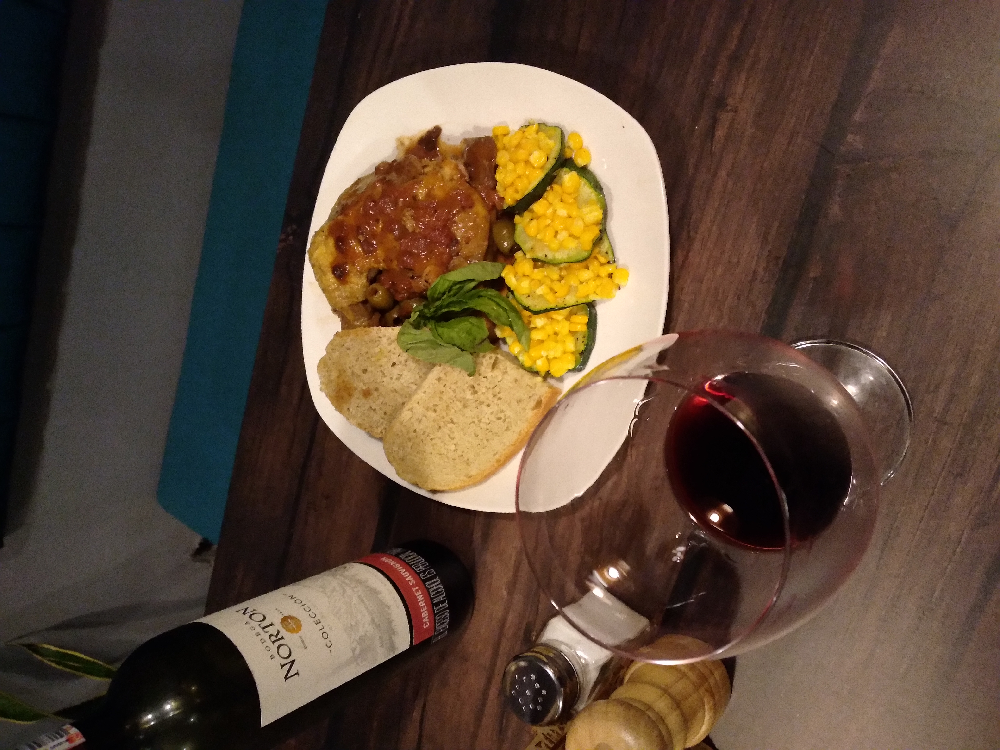
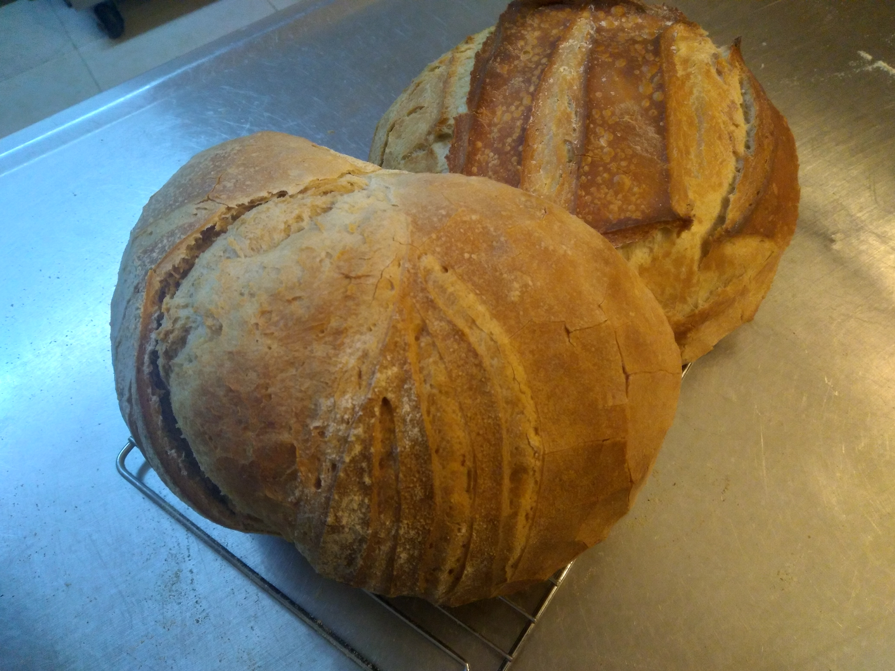

Burgundy: Carne de res cocinado lentemente en vino tinto.

Tortas del Mar con verduras y mayonesa de aguacate.

Pernil de Pollo provenzal.

Sanduche de cerdo BBQ con cebollas y queso.

Pasta Griego con cordero, aceitunas, pimentones, maiz dulce, ajo, albahaca.

Galleta de mani y chocolate con helado y salsa de frutas rojas.

Pan Francais de la Casa

Papa Gratinada

Beef Stroganoff. Nuestro Burgundy con pasta y sour cream.
Los Cocineros

Good Rustic Food

Burgundy House